International Symposium on the Transnational Life of the Chinese Railroad Workers in North America
Shelley Fisher Fishkin and Hilton Obenzinger
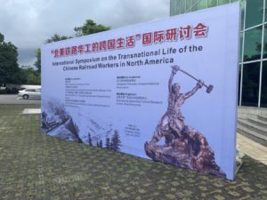
On June 5 through 9, 2019 the “International Symposium on the Transnational Life of the Chinese Railroad Workers in North America” was hosted by Wuyi University. The symposium was co-sponsored by Wuyi University, Jiangmen, China; the China Institute for Chinese Overseas Studies, Beijing, China; the Editorial Office of “Guangdong Overseas Chinese History” Project, and the Chinese Railroad Workers in North America Project at Stanford University. It was co-organized by the Jiangmen Overseas Chinese Historical Association and the Guangdong Qiaoxiang Cultural Research Center at Wuyi University. (“Qiaoxiang” is the term for the home villages of the workers.)
The group included leading conference organizers based at Wuyi University’s Guangdong Qiaoxiang Cultural Research Center who have also been key participants in the Stanford Project: professors Zhang Guoxiong, Liu Jin, and Selia Jinhua Tan.
In addition to our collaborators at Wuyi, the Chinese Railroad Workers in North America Project at Stanford was represented by co-director Shelley Fisher Fishkin, associate director Hilton Obenzinger, oral history director Connie Young Yu; and project participants Monica Yeung Arima, historian Sue Fawn Chung, archaeologist Ryan Kennedy, photographer Li Ju, archaeologist Michael Polk, Stanford history department chair Matthew Sommer (who is also an advisor to the Cangdong Village Project), and Dongfang Shao, head of the Asian Division of the Library of Congress, who was one of the Project’s original co-organizers.
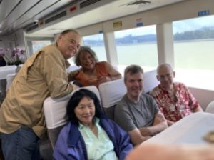
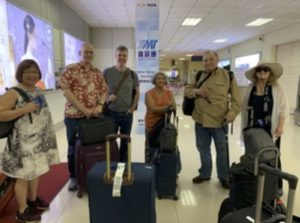
The conference opened with welcoming comments from Prof. Liu Jin (Wuyi University); Zhang Yunhua (President of Wuyi University); Zhang Chunwang (China Institute for Chinese Overseas Studies); and Zhang Yinglong (Editorial Office of “Guangdong Overseas Chinese History” Project).


The opening ceremony was followed by keynote speeches on three new books that were launched at the conference. Ryan Kennedy spoke about a new book about recent archaeologists’ research on Chinese railroad workers in the US, a summary of some of the research published in English in The Chinese and the Iron Road: Building the Transcontinental Railroad edited by Gordon H. Chang and Shelley Fisher Fishkin (with Hilton Obenzinger and Roland Hsu), and the special issue of Historical Archaeology (2015) edited by Barbara Voss. Shelley Fisher Fishkin spoke about her new edition of Russell Conwell’s Why and How: Why Chinese Emigrate, and the Means they Adopt for the Purpose of Reaching America (1871). This book is the first Chinese edition of a young American journalist’s report on his visit to Guangdong in 1870 (which included translations of several circulars used to recruit Chinese workers, as well as interviews with workers who had returned to China). It was expertly translated by Yao Ting. Shen Weihong spoke about the introduction to Chinese railroad workers in North America she wrote for young people to better acquaint them with this neglected chapter of the past.
The Chinese Overseas Chinese Publishing House generously provided copies of all three new books to conference participants.
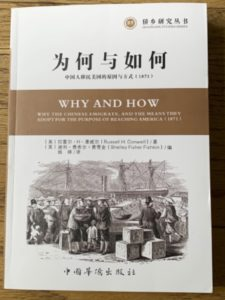
Hilton Obenzinger spoke about the massive strike mounted by Chinese railroad workers in the US in 1867, the largest labor action to take place in the US in that era, presenting new insights derived from the Project’s research. Dongfang Shao surveyed Chinese railroad workers materials in collections in the US Library of Congress, and archaeologist Michael Polk discussed research on Chinese artifacts discovered at railroad worker camps.
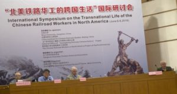
Connie Young Yu provided an overview of the oral histories of descendants of

Chinese railroad workers in the US that she conducted (with filmmaker Barre Fong), and delighted all assembled with a video clip of her opening talk at the Golden Spike 150th anniversary ceremony in Utah. It was a triumphant moment that reflected the change in awareness that efforts of many individuals at the conference (and others) had helped bring about: while the role of the Chinese railroad workers in constructing the Transcontinental Railroad had been ignored at the official commemoration in 1969, it was front and center in 2019.
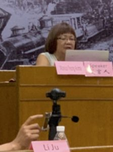
Monica Young Arima described her efforts to educate the wider public about Chinese railroad workers in the US through her circulation of two photographic and historical exhibits developed by the Project to a broad range of venues throughout the country including libraries, museums, historical societies, schools, colleges, conferences and festivals, and noted her intention to lobby to get textbooks and curricula in US schools changed to give greater attention to this important chapter of the past. One of the exhibits—a series of paired historical photos by railroad photographer Alfred Hart and
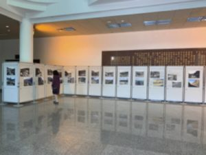
contemporary Chinese photographer Li Ju, was on display in the entrance to the Shiyou Building at Wuyi University, where the conference was held.
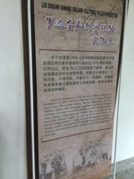
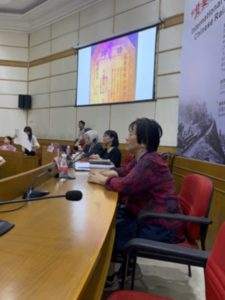
The story of Central Pacific railroad worker Lim Lip Hong and his descendants was the focus of a session that included Sue Fawn Chung, and descendants Andrea Yee of California and Cynthia Lee of Hong Kong.

Of particular interest to attendees was the story of Cynthia Lee’s grandfather, descendant Art Lym, whose remarkable efforts saved Chinese aviation from destruction by the Japanese during World War II. Cynthia Lee noted the recent publication in Hong Kong of a book about Lym, Time Flies: The Story of Art Lym, Hero of Chinese Aviation by Patti Gully (2019).
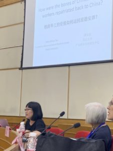
Selia Jinhua Tan presented a fascinating talk about the bone repatriation of Chinese railroad workers that described in detail how bones of deceased railroad workers in the US were buried, identified and recovered, shipped to China, and eventually reburied in the workers’ home villages, noting the role of the Tung Wah Hospital in this process.
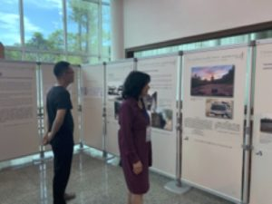
Other presentations included Li Ju’s discussion of the photographs he took during the five trips he has made along the railroad route—photos which were on display at the conference.
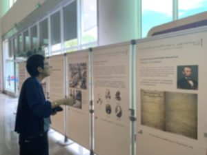
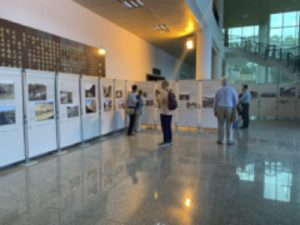
Wilson Lee of the Chinese American Heritage Foundation gave an update on efforts to promote Chinese heritage among descendants and others, particularly the January 1, 2019 Parade of Roses in Pasadena, California, which featured a float on the transcontinental railroad and the Chinese. Zhang Yinglong described cultural links between Chinese railroad workers in the US and their countrymen in China. There were also presentations about railroad workers heritage by Zhou Limon and Zhang Xiuming.
A team of indefatigable interpreters – Chen Yanhua, Feng Shuxin, and Wei Wen—all young faculty members from the School of Foreign Language at Wuyi University—provided adept translations from Chinese to English and English to Chinese, allowing the research presented to be accessible to everyone in attendance.
Conference attendees, in addition to other faculty from Wuyi University, included scholars from Jinan University, the Chinese Academy of Social Sciences, the China Institute for Overseas Studies, and the Overseas Chinese Affairs Office of the People’s Government of Guangdong Province. Television, radio, and print journalists and documentary producers from local, regional and national Chinese media also attended, and conducted a number of interviews about the railroad workers with conference participants over the two days of meetings at Wuyi University.
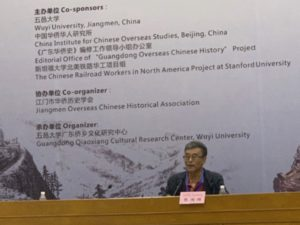
Zhang Guoxiong provided formal remarks at the close of the two days of papers, noting the importance of the unprecedented transnational scholarly collaboration between the Chinese Railroad Workers in North America Project at Stanford and scholars at the Guangdong Qiaoxiang Cultural Research Center at Wuyi University that the conference represented. He expressed his hope that the groundbreaking research emerging from this joint venture would pave the way for continuing collaboration between scholars in the US and China to recover important but neglected chapters in our shared past.
Two days of formal papers and discussion were followed by a day during which participants visited the Cangdong Education Center, a conservation and education center founded by Selia Jinhua Tan in Kaiping, and the Yinxin (money-letter or remittance) Museum, founded by Liu Jin in Taishan.
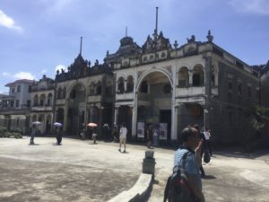
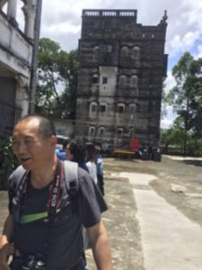
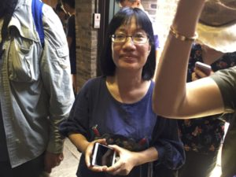
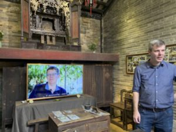
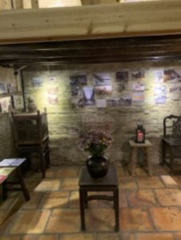
At the Cangdong Education Center Selia Jinhua Tan described her efforts to preserve and the tangible and intangible cultural heritage of a village from which many railroad workers came. The village has become the site of the Cangdong Village Project, a collaborative research project studying the home villages of Chinese migrants involving Stanford and other US-based archaeologists and folk life study scholars in China (https://cangdong.stanford.edu/). The villagers and their guests viewed the Chinese premier of Making Ties: The Cangdong Village Project which shows the process archaeologists beginning the investigation of the area. A qiaoxiang within the county-level city of Kaiping in Guangdong Province, Cangdong Village was founded during the Yuan Dynasty (1271-1367). By the 19th century, over 400 people lived there. Residents began to migrate from the village to the US and other destinations in the 1850s. Local musicians performed folk music on traditional instruments for conference attendees, who were also treated to a delicious lunch of local foods.
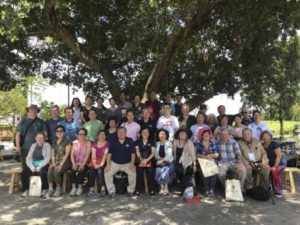
After the trip to Kaiping, Lim Lip Hong’s descendants visited his home village in Taishan, and were distressed to learn that the village’s dialou was about to be demolished—along with many other parts of the village. (Dialou are watchtowers combining Chinese and Western architecture built by returning overseas workers.) Inspired by Selia Jinhua Tan’s work in Kaiping, and by the conference’s emphasis on the importance of this history, Cynthia Lee and other Lim Lip Hong descendants decided to spearhead an effort to preserve the village and the dialou and create an education center along the lines of the Cangdong center.
At the Yinxin (money-letter or remittance) Museum in Taishan, Liu Jin elaborated on the process by which overseas Chinese sent remittances to their families back home, sharing the stories that many of the featured documents and photographs told. The beautifully crafted museum exhibits have come to play an important educational role, offering audiences a range of insights on the links between Chinese who ventured out of Guangdong to other places and family members who remained back home.
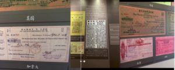
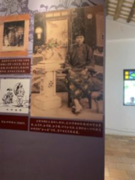
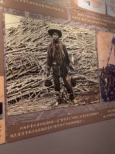
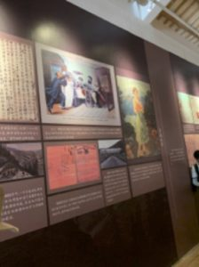
Of special interest was the spot behind the museum from which virtually every Chinese railroad worker from Guangdong who came to the US began his journey. Zhang Guoxiong noted that every worker would have boarded a boat at this spot to depart for Hong Kong, and then the US.

Conference attendees enjoyed the warm hospitality of colleagues at Wuyi and found the experience as enjoyable as it was informative and stimulating. The conference affirmed the value of border-crossing collaboration, and paved the way for more scholarship on the transnational history of the railroad workers from Guangdong.